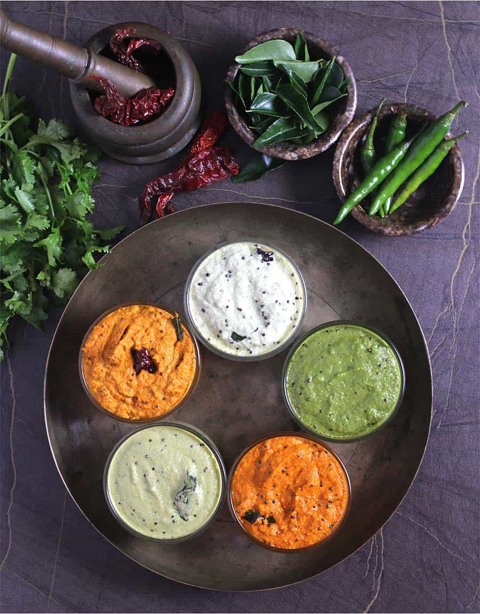

Chutney Recipe

Coconut chutney or Thengai chutney in tamil, is one of the most consumed chutney's in south india, its especially good with Dosa
Ingredients
- Coriander Leaves - one handful
- Tamarind - a small piece
- 1/2 Coconut (grated)
- Salt as required
- Kadalai poppu 1/2 cup
- Green chilly
- Ginger - one small piece
Steps
Coconut chutney
- First add, Coconut, Kadalai poppu, Salt, Coriander leaves, Tamarind, Ginger, Green chilly and some water in mixie jar and grind till fine paste
- In the process of grinding, stop and look at the chutney to see if its in the right constituency, if not add some water and grind
- Perform #2 until you acquire the required constituency.
Thallipu(To temper)
- On a pan, add some oil, coriander leaves, asafatodia, mustard seeds
- Roast them well
- Add to our earlier chutney mixture and Voila! our chutney is ready.